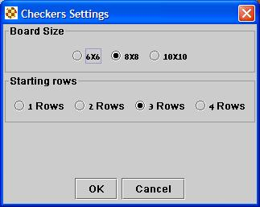

Back to Help Contents
Advanced Game SettingsDam Ka! allows you to play Checkers, on non-standard boards. In order to change the board characteristics, select the Advanced option from the New Game dialog. You will receive the following screen:  Using this screen you can select the board dimensions. The following boards are supported:
You may also select the number of rows peons to begin with, by selecting the number of starting rows. The following options are available:
Back to Help Contents |